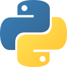

The Centauri ecosystem / 3D demo
A pilot flies Centauri from a picnic table while a second person farther down the path uses Link to check that radio messages are getting through.
Enable JavaScript to view the 3D scene.
Centauri’s airframe is a custom design you can 3D-print yourself. It’s built around 5-inch propellers, with room for the battery and electronics. The print files are free to download!
The "brain" of the quadcopter! It runs on a tiny Raspberry Pi Pico, using motion sensors to see how the quadcopter is moving and adjusting all four motors to match what the pilot asks it to do.

Written in MicroPython, a version of Python for tiny computers. We chose it so you can read the code, understand how it flies, and make changes yourself.
250 control loops per second
Shown in slow motion. Hover, tap, or tab to a step to learn more.
Centauri Link is a handheld radio monitor. Walk away from the transmitter with Link to see whether messages are still getting through, without putting the quadcopter in the air. Link listens; it doesn’t send commands.
LRECV is the time since the last packet. Watch the bar drop and the count climb as packets arrive.
An ordinary laptop becomes the pilot's interface for controlling the quadcopter. Plug in an Xbox controller for the controls and the transceiver platform for the radio.
Written in Python so you can read the code, see how the transmitter works, and make changes yourself.
While operating, the Python program rapidly switches between these tasks, called coroutines, as each has important work to do simultaneously.
Read the Xbox sticks and triggers, smoothing small stick movements for finer control.
Send the latest inputs through the transceiver 20 times per second when armed.
Read aircraft status, such as battery voltage, sent while throttle is zero.
Show your inputs and the latest aircraft status on the laptop screen.
Your laptop can’t transmit on the 433 MHz radio band Centauri listens on. The Transceiver Platform is a small USB companion that gives it that ability.
As you fly, the transmitter program on your laptop sends a steady stream of control commands over USB, and the platform broadcasts them to the quadcopter.
The transmitter sends your stick inputs to the quadcopter 20 times per second. Each update is a control packet: a tiny radio message that tells Centauri how much thrust to apply and how you want it to turn.
0
140
204
96
159
255
128
192
51
Select a glowing halo to take a closer look.